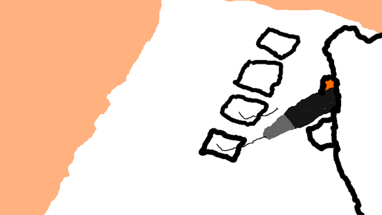

Informatie over de BSA!
- - Aan het eind van een periode krijg je een bindend studieadvies.
- - Deze kan positief, twijfelachtig of negatief zijn. Als het negatief is, moet je van de opleiding af.
- - Als het advies twijfelachtig is, krijg je de kans om het te verbeteren. Dit wordt besproken met de leerling.
|  |